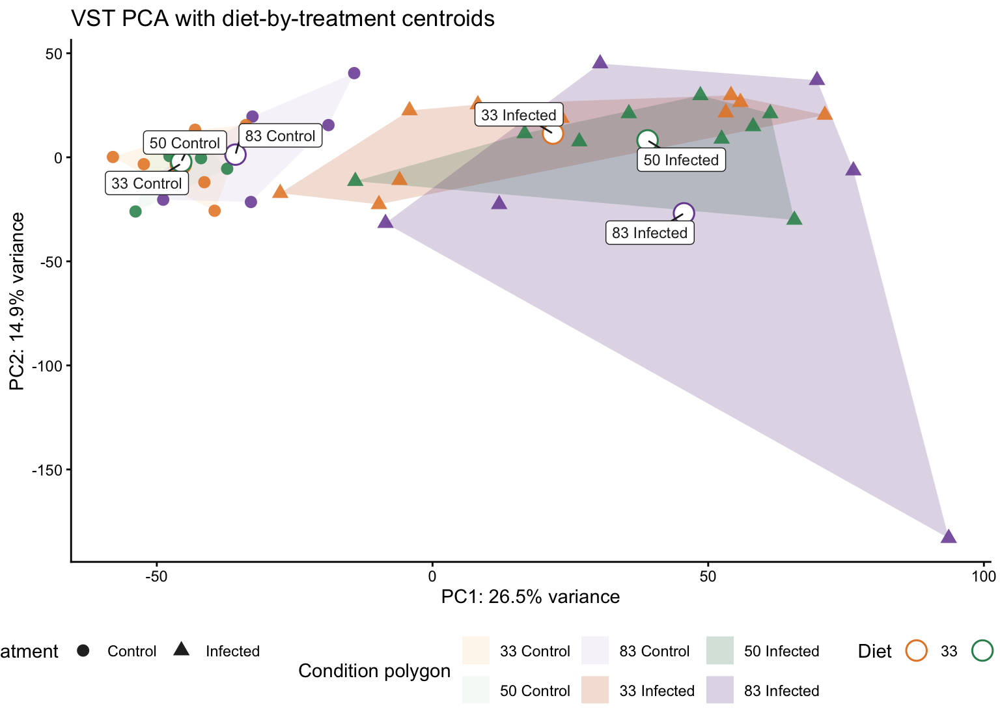
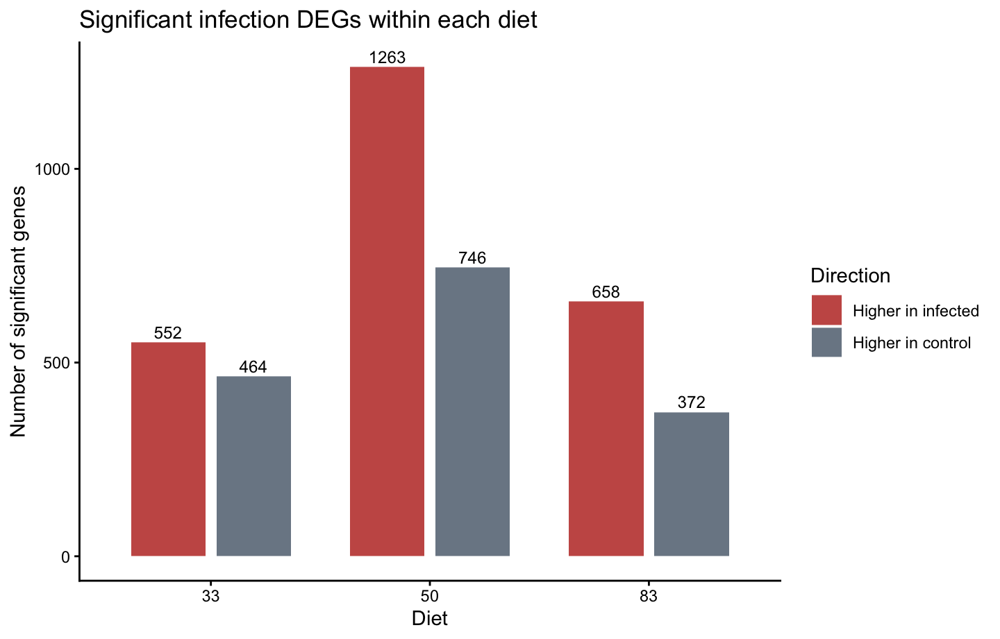
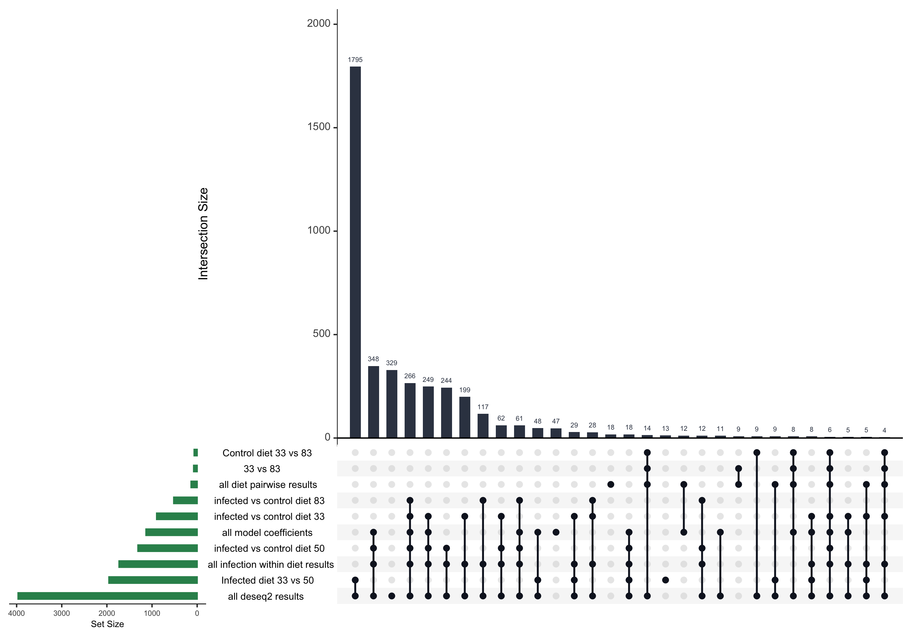
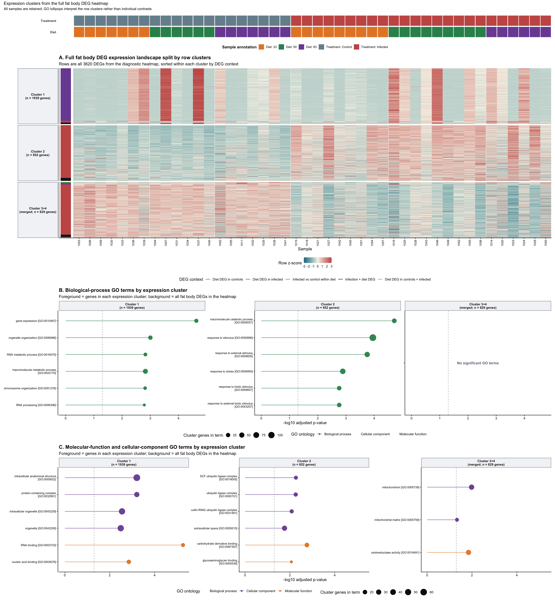

Last updated: 2026-08-14
Checks: 6 1
Knit directory:
gregaria-diet-infection-interaction/
This reproducible R Markdown analysis was created with workflowr (version 1.7.2). The Checks tab describes the reproducibility checks that were applied when the results were created. The Past versions tab lists the development history.
The R Markdown file has unstaged changes. To know which version of
the R Markdown file created these results, you’ll want to first commit
it to the Git repo. If you’re still working on the analysis, you can
ignore this warning. When you’re finished, you can run
wflow_publish to commit the R Markdown file and build the
HTML.
Great job! The global environment was empty. Objects defined in the global environment can affect the analysis in your R Markdown file in unknown ways. For reproduciblity it’s best to always run the code in an empty environment.
The command set.seed(20260427) was run prior to running
the code in the R Markdown file. Setting a seed ensures that any results
that rely on randomness, e.g. subsampling or permutations, are
reproducible.
Great job! Recording the operating system, R version, and package versions is critical for reproducibility.
Nice! There were no cached chunks for this analysis, so you can be confident that you successfully produced the results during this run.
Great job! Using relative paths to the files within your workflowr project makes it easier to run your code on other machines.
Great! You are using Git for version control. Tracking code development and connecting the code version to the results is critical for reproducibility.
The results in this page were generated with repository version 1bc8d16. See the Past versions tab to see a history of the changes made to the R Markdown and HTML files.
Note that you need to be careful to ensure that all relevant files for
the analysis have been committed to Git prior to generating the results
(you can use wflow_publish or
wflow_git_commit). workflowr only checks the R Markdown
file, but you know if there are other scripts or data files that it
depends on. Below is the status of the Git repository when the results
were generated:
Ignored files:
Ignored: .DS_Store
Ignored: analysis/.Rhistory
Ignored: analysis/output/
Ignored: code/R_timecourse_reference/
Ignored: code/scripts/__pycache__/
Ignored: data/.DS_Store
Ignored: data/GO_Annotations
Ignored: data/external
Ignored: data/legacy_csv
Ignored: data/raw_read_counts
Ignored: data/reference
Ignored: data/scaffold_origin
Ignored: output/.DS_Store
Ignored: output/rmd_runs
Ignored: output/runs
Ignored: outputs
Ignored: scripts/.RData
Ignored: scripts/.Rhistory
Ignored: scripts/__pycache__/
Ignored: scripts/manuscript/__pycache__/
Untracked files:
Untracked: DRYAD_PACKAGE.md
Untracked: scripts/build_dryad_manifest.sh
Untracked: scripts/migrate_large_data_to_dryad.sh
Untracked: scripts/setup_dryad_links.sh
Unstaged changes:
Modified: .gitignore
Modified: README.md
Modified: analysis/02-workflow-reproducibility.Rmd
Modified: analysis/index.Rmd
Deleted: data/GO_Annotations/DesertLocustR/DESCRIPTION
Deleted: data/GO_Annotations/DesertLocustR/NAMESPACE
Deleted: data/GO_Annotations/DesertLocustR/R/GO_enrichment.R
Deleted: data/GO_Annotations/DesertLocustR/R/KEGG_enrichment.R
Deleted: data/GO_Annotations/DesertLocustR/R/install_depedencies.R
Deleted: data/GO_Annotations/DesertLocustR/R/prep_data.R
Deleted: data/GO_Annotations/DesertLocustR/man/GO_enrichment.Rd
Deleted: data/GO_Annotations/DesertLocustR/man/KEGG_enrichment.Rd
Deleted: data/GO_Annotations/DesertLocustR/man/lift_annotaitons.Rd
Deleted: data/GO_Annotations/DesertLocustR_0.1.0.tar.gz
Deleted: data/GO_Annotations/EggNog_Arthropoda_one2one.emapper.annotations
Deleted: data/GO_Annotations/GCF_023897955.1_iqSchGreg1.2_Arthopoda_one2one.emapper.annotations
Deleted: data/GO_Annotations/blast2go_gregaria.annot
Deleted: data/GO_Annotations/blast2go_gregaria.annot.mgp_removed
Deleted: data/GO_Annotations/blast2go_gregaria.txt
Deleted: data/GO_Annotations/blast2go_gregaria_custom.txt
Modified: data/README.md
Deleted: data/external/curated_target_genes/2026-07-26_curated-hypoth_DEGs_v14.xlsx
Deleted: data/external/curated_target_genes/2026-08-06_curated-hypoth_DEGs_v21.xlsx
Deleted: data/external/curated_target_genes/2026-08-09_Immune_Protein_Anabolism_DEGs_v24.xlsx
Deleted: data/external/curated_target_genes/CuratedDEGs_CompositeFig_v03.pdf
Deleted: data/external/curated_target_genes/README.md
Deleted: data/external/curated_target_genes/hypoth-curated_DEGs_figures.docx
Deleted: data/external/phase_reference/DESeq2_results_sva_Head_gregaria_togregaria.csv
Deleted: data/external/phase_reference/DESeq2_results_sva_Thorax_gregaria_togregaria.csv
Deleted: data/external/phase_reference/DESeq2_sigresults_sva_Head_gregaria_togregaria.csv
Deleted: data/external/phase_reference/DESeq2_sigresults_sva_Thorax_gregaria_togregaria.csv
Deleted: data/external/phase_reference/README.md
Deleted: data/external/phase_reference/gregaria_head_phase_degs.csv
Deleted: data/external/phase_reference/gregaria_thorax_phase_degs.csv
Deleted: data/external/phase_reference/overlapping_genes_head_thorax_gregaria.csv
Deleted: data/external/timecourse_fatbody_reference/README.md
Deleted: data/external/timecourse_fatbody_reference/gregaria_FAT_phase_reference_metadata.csv
Deleted: data/external/timecourse_fatbody_reference/readcounts/GREG_G_CCT_11_FAT_featurecounts.txt
Deleted: data/external/timecourse_fatbody_reference/readcounts/GREG_S_ICT_9_FAT_featurecounts.txt
Deleted: data/legacy_csv/README.md
Deleted: data/legacy_csv/annotated_tables/Control_33_vs_50_Annotated_Table.csv
Deleted: data/legacy_csv/annotated_tables/Control_33_vs_83_Annotated_Table.csv
Deleted: data/legacy_csv/annotated_tables/Control_50_83_Combined_Annotated.csv
Deleted: data/legacy_csv/annotated_tables/Control_SVA_50_83_Combined_Annotated.csv
Deleted: data/legacy_csv/annotated_tables/Infected_33_vs_50_Annotated_Table.csv
Deleted: data/legacy_csv/annotated_tables/Infected_33_vs_83_Annotated_Table.csv
Deleted: data/legacy_csv/annotated_tables/Infected_50_83_Combined_Annotated.csv
Deleted: data/legacy_csv/annotated_tables/Infected_SVA_50_83_Combined_Annotated.csv
Deleted: data/legacy_csv/annotated_tables/Within_50_83_Combined_Annotated.csv
Deleted: data/legacy_csv/annotated_tables/filter_table_with_rRNA.csv
Deleted: data/legacy_csv/annotated_tables/filtered_table_NO_rRNA.csv
Deleted: data/legacy_csv/overlap_helpers/analysis_non_overlapping_rows.csv
Deleted: data/legacy_csv/overlap_helpers/common_rows.csv
Deleted: data/legacy_csv/overlap_helpers/control_infection_desc_overlap.csv
Deleted: data/legacy_csv/overlap_helpers/control_infection_within_desc_overlap.csv
Deleted: data/legacy_csv/overlap_helpers/matched_GeneIDs_by_Description.csv
Deleted: data/legacy_csv/overlap_helpers/matching_rows_with_source.csv
Deleted: data/legacy_csv/overlap_helpers/non_overlapping_rows.csv
Deleted: data/raw_read_counts/03-FAT-DESeq2/GREG_G_CCT_11_FAT_FULL_featurecounts.txt
Deleted: data/raw_read_counts/03-FAT-DESeq2/GREG_G_CCT_11_FAT_featurecounts.txt
Deleted: data/raw_read_counts/03-FAT-DESeq2/GREG_S_ICT_9_FAT_featurecounts.txt
Deleted: data/raw_read_counts/03-gregaria-DESeq2/SGRE-HEAD-CRD-1_MERGE_counts.txt
Deleted: data/raw_read_counts/03-gregaria-DESeq2/SGRE-HEAD-CRD-1_MERGE_featurecounts.txt
Deleted: data/raw_read_counts/03-gregaria-DESeq2/SGRE-HEAD-CRD-2_MERGE_counts.txt
Deleted: data/raw_read_counts/03-gregaria-DESeq2/SGRE-HEAD-CRD-2_MERGE_featurecounts.txt
Deleted: data/raw_read_counts/03-gregaria-DESeq2/SGRE-HEAD-CRD-3_MERGE_counts.txt
Deleted: data/raw_read_counts/03-gregaria-DESeq2/SGRE-HEAD-CRD-3_MERGE_featurecounts.txt
Deleted: data/raw_read_counts/03-gregaria-DESeq2/SGRE-HEAD-CRD-4_MERGE_counts.txt
Deleted: data/raw_read_counts/03-gregaria-DESeq2/SGRE-HEAD-CRD-4_MERGE_featurecounts.txt
Deleted: data/raw_read_counts/03-gregaria-DESeq2/SGRE-HEAD-CRD-5_MERGE_counts.txt
Deleted: data/raw_read_counts/03-gregaria-DESeq2/SGRE-HEAD-CRD-5_MERGE_featurecounts.txt
Deleted: data/raw_read_counts/03-gregaria-DESeq2/SGRE-HEAD-CRD-6_MERGE_counts.txt
Deleted: data/raw_read_counts/03-gregaria-DESeq2/SGRE-HEAD-CRD-6_MERGE_featurecounts.txt
Deleted: data/raw_read_counts/03-gregaria-DESeq2/SGRE-HEAD-ISO-1_MERGE_counts.txt
Deleted: data/raw_read_counts/03-gregaria-DESeq2/SGRE-HEAD-ISO-1_MERGE_featurecounts.txt
Deleted: data/raw_read_counts/03-gregaria-DESeq2/SGRE-HEAD-ISO-2_MERGE_counts.txt
Deleted: data/raw_read_counts/03-gregaria-DESeq2/SGRE-HEAD-ISO-2_MERGE_featurecounts.txt
Deleted: data/raw_read_counts/03-gregaria-DESeq2/SGRE-HEAD-ISO-3_MERGE_counts.txt
Deleted: data/raw_read_counts/03-gregaria-DESeq2/SGRE-HEAD-ISO-3_MERGE_featurecounts.txt
Deleted: data/raw_read_counts/03-gregaria-DESeq2/SGRE-HEAD-ISO-4_MERGE_counts.txt
Deleted: data/raw_read_counts/03-gregaria-DESeq2/SGRE-HEAD-ISO-4_MERGE_featurecounts.txt
Deleted: data/raw_read_counts/03-gregaria-DESeq2/SGRE-HEAD-ISO-5_MERGE_counts.txt
Deleted: data/raw_read_counts/03-gregaria-DESeq2/SGRE-HEAD-ISO-5_MERGE_featurecounts.txt
Deleted: data/raw_read_counts/03-gregaria-DESeq2/SGRE-HEAD-ISO-6_MERGE_counts.txt
Deleted: data/raw_read_counts/03-gregaria-DESeq2/SGRE-HEAD-ISO-6_MERGE_featurecounts.txt
Deleted: data/raw_read_counts/03-gregaria-DESeq2/SGRE-THOX-CRD-1_MERGE_counts.txt
Deleted: data/raw_read_counts/03-gregaria-DESeq2/SGRE-THOX-CRD-1_MERGE_featurecounts.txt
Deleted: data/raw_read_counts/03-gregaria-DESeq2/SGRE-THOX-CRD-2_MERGE_counts.txt
Deleted: data/raw_read_counts/03-gregaria-DESeq2/SGRE-THOX-CRD-2_MERGE_featurecounts.txt
Deleted: data/raw_read_counts/03-gregaria-DESeq2/SGRE-THOX-CRD-3_MERGE_counts.txt
Deleted: data/raw_read_counts/03-gregaria-DESeq2/SGRE-THOX-CRD-3_MERGE_featurecounts.txt
Deleted: data/raw_read_counts/03-gregaria-DESeq2/SGRE-THOX-CRD-4_MERGE_counts.txt
Deleted: data/raw_read_counts/03-gregaria-DESeq2/SGRE-THOX-CRD-4_MERGE_featurecounts.txt
Deleted: data/raw_read_counts/03-gregaria-DESeq2/SGRE-THOX-CRD-5_MERGE_counts.txt
Deleted: data/raw_read_counts/03-gregaria-DESeq2/SGRE-THOX-CRD-5_MERGE_featurecounts.txt
Deleted: data/raw_read_counts/03-gregaria-DESeq2/SGRE-THOX-CRD-6_MERGE_counts.txt
Deleted: data/raw_read_counts/03-gregaria-DESeq2/SGRE-THOX-CRD-6_MERGE_featurecounts.txt
Deleted: data/raw_read_counts/03-gregaria-DESeq2/SGRE-THOX-ISO-1_MERGE_counts.txt
Deleted: data/raw_read_counts/03-gregaria-DESeq2/SGRE-THOX-ISO-1_MERGE_featurecounts.txt
Deleted: data/raw_read_counts/03-gregaria-DESeq2/SGRE-THOX-ISO-2_MERGE_counts.txt
Deleted: data/raw_read_counts/03-gregaria-DESeq2/SGRE-THOX-ISO-2_MERGE_featurecounts.txt
Deleted: data/raw_read_counts/03-gregaria-DESeq2/SGRE-THOX-ISO-3_MERGE_counts.txt
Deleted: data/raw_read_counts/03-gregaria-DESeq2/SGRE-THOX-ISO-3_MERGE_featurecounts.txt
Deleted: data/raw_read_counts/03-gregaria-DESeq2/SGRE-THOX-ISO-4_MERGE_counts.txt
Deleted: data/raw_read_counts/03-gregaria-DESeq2/SGRE-THOX-ISO-4_MERGE_featurecounts.txt
Deleted: data/raw_read_counts/03-gregaria-DESeq2/SGRE-THOX-ISO-5_MERGE_counts.txt
Deleted: data/raw_read_counts/03-gregaria-DESeq2/SGRE-THOX-ISO-5_MERGE_featurecounts.txt
Deleted: data/raw_read_counts/03-gregaria-DESeq2/SGRE-THOX-ISO-6_MERGE_counts.txt
Deleted: data/raw_read_counts/03-gregaria-DESeq2/SGRE-THOX-ISO-6_MERGE_featurecounts.txt
Deleted: data/raw_read_counts/DESeq2_output/plots/MA_Diet33_vs_50_inControls.pdf
Deleted: data/raw_read_counts/DESeq2_output/plots/MA_Diet33_vs_50_within_Infected.pdf
Deleted: data/raw_read_counts/DESeq2_output/plots/MA_Diet33_vs_83_inControls.pdf
Deleted: data/raw_read_counts/DESeq2_output/plots/MA_Diet33_vs_83_within_Infected.pdf
Deleted: data/raw_read_counts/DESeq2_output/plots/MA_Diet83_vs_50_inControls.pdf
Deleted: data/raw_read_counts/DESeq2_output/plots/MA_Diet83_vs_50_within_Infected.pdf
Deleted: data/raw_read_counts/DESeq2_output/plots/MA_Infection_within_Diet33.pdf
Deleted: data/raw_read_counts/DESeq2_output/plots/MA_Infection_within_Diet50.pdf
Deleted: data/raw_read_counts/DESeq2_output/plots/MA_Infection_within_Diet83.pdf
Deleted: data/raw_read_counts/DESeq2_output/plots/MA_Interaction_Diet33_vs_50.pdf
Deleted: data/raw_read_counts/DESeq2_output/plots/MA_Interaction_Diet83_vs_50.pdf
Deleted: data/raw_read_counts/DESeq2_output/plots/MeanSD_vst.pdf
Deleted: data/raw_read_counts/DESeq2_output/plots/PCA.pdf
Deleted: data/raw_read_counts/DESeq2_output/plots/SampleDistance_Heatmap.pdf
Deleted: data/raw_read_counts/DESeq2_output/plots/Volcano_Diet33_vs_50_inControls.pdf
Deleted: data/raw_read_counts/DESeq2_output/plots/Volcano_Diet33_vs_50_within_Infected.pdf
Deleted: data/raw_read_counts/DESeq2_output/plots/Volcano_Diet33_vs_83_inControls.pdf
Deleted: data/raw_read_counts/DESeq2_output/plots/Volcano_Diet33_vs_83_within_Infected.pdf
Deleted: data/raw_read_counts/DESeq2_output/plots/Volcano_Diet83_vs_50_inControls.pdf
Deleted: data/raw_read_counts/DESeq2_output/plots/Volcano_Diet83_vs_50_within_Infected.pdf
Deleted: data/raw_read_counts/DESeq2_output/plots/Volcano_Infection_within_Diet33.pdf
Deleted: data/raw_read_counts/DESeq2_output/plots/Volcano_Infection_within_Diet50.pdf
Deleted: data/raw_read_counts/DESeq2_output/plots/Volcano_Infection_within_Diet83.pdf
Deleted: data/raw_read_counts/DESeq2_output/plots/Volcano_Interaction_Diet33_vs_50.pdf
Deleted: data/raw_read_counts/DESeq2_output/plots/Volcano_Interaction_Diet83_vs_50.pdf
Deleted: data/raw_read_counts/DESeq2_output/tables/Diet33_vs_50_inControls.csv
Deleted: data/raw_read_counts/DESeq2_output/tables/Diet33_vs_50_inControls_SHRUNK.csv
Deleted: data/raw_read_counts/DESeq2_output/tables/Diet33_vs_50_within_Infected.csv
Deleted: data/raw_read_counts/DESeq2_output/tables/Diet33_vs_50_within_Infected_SHRUNK.csv
Deleted: data/raw_read_counts/DESeq2_output/tables/Diet33_vs_83_inControls.csv
Deleted: data/raw_read_counts/DESeq2_output/tables/Diet33_vs_83_inControls_SHRUNK.csv
Deleted: data/raw_read_counts/DESeq2_output/tables/Diet33_vs_83_within_Infected.csv
Deleted: data/raw_read_counts/DESeq2_output/tables/Diet33_vs_83_within_Infected_SHRUNK.csv
Deleted: data/raw_read_counts/DESeq2_output/tables/Diet83_vs_50_inControls.csv
Deleted: data/raw_read_counts/DESeq2_output/tables/Diet83_vs_50_inControls_SHRUNK.csv
Deleted: data/raw_read_counts/DESeq2_output/tables/Diet83_vs_50_within_Infected.csv
Deleted: data/raw_read_counts/DESeq2_output/tables/Diet83_vs_50_within_Infected_SHRUNK.csv
Deleted: data/raw_read_counts/DESeq2_output/tables/FILTER_support_counts_ALL.csv
Deleted: data/raw_read_counts/DESeq2_output/tables/Infection_within_Diet33.csv
Deleted: data/raw_read_counts/DESeq2_output/tables/Infection_within_Diet33_SHRUNK.csv
Deleted: data/raw_read_counts/DESeq2_output/tables/Infection_within_Diet50.csv
Deleted: data/raw_read_counts/DESeq2_output/tables/Infection_within_Diet50_SHRUNK.csv
Deleted: data/raw_read_counts/DESeq2_output/tables/Infection_within_Diet83.csv
Deleted: data/raw_read_counts/DESeq2_output/tables/Infection_within_Diet83_SHRUNK.csv
Deleted: data/raw_read_counts/DESeq2_output/tables/Interaction_Diet33_vs_50.csv
Deleted: data/raw_read_counts/DESeq2_output/tables/Interaction_Diet33_vs_50_SHRUNK.csv
Deleted: data/raw_read_counts/DESeq2_output/tables/Interaction_Diet83_vs_50.csv
Deleted: data/raw_read_counts/DESeq2_output/tables/Interaction_Diet83_vs_50_SHRUNK.csv
Deleted: data/raw_read_counts/DESeq2_output/tables/SUMMARY_counts_SHRUNKEN_detailed.csv
Deleted: data/raw_read_counts/DESeq2_output/tables/SUMMARY_counts_UNSHRUNKEN_detailed.csv
Deleted: data/raw_read_counts/DESeq2_output/tables/resultsNames.txt
Deleted: data/raw_read_counts/master_counts.csv
Deleted: data/raw_read_counts/master_counts.tsv
Deleted: data/raw_read_counts/master_counts_no_rRNA.csv
Deleted: data/raw_read_counts/master_counts_no_rRNA.tsv
Deleted: data/raw_read_counts/master_counts_no_rRNA_manifest.csv
Deleted: data/raw_read_counts/master_counts_removed_rRNA_genes.csv
Deleted: data/raw_read_counts/mehreen_1002_MERGE_counts.txt
Deleted: data/raw_read_counts/mehreen_1003_MERGE_counts.txt
Deleted: data/raw_read_counts/mehreen_1004_MERGE_counts.txt
Deleted: data/raw_read_counts/mehreen_1005_MERGE_counts.txt
Deleted: data/raw_read_counts/mehreen_1006_MERGE_counts.txt
Deleted: data/raw_read_counts/mehreen_1007_MERGE_counts.txt
Deleted: data/raw_read_counts/mehreen_1009_MERGE_counts.txt
Deleted: data/raw_read_counts/mehreen_1011_MERGE_counts.txt
Deleted: data/raw_read_counts/mehreen_1014_MERGE_counts.txt
Deleted: data/raw_read_counts/mehreen_1015_MERGE_counts.txt
Deleted: data/raw_read_counts/mehreen_1016_MERGE_counts.txt
Deleted: data/raw_read_counts/mehreen_1018_MERGE_counts.txt
Deleted: data/raw_read_counts/mehreen_1020_MERGE_counts.txt
Deleted: data/raw_read_counts/mehreen_1021_MERGE_counts.txt
Deleted: data/raw_read_counts/mehreen_1023_MERGE_counts.txt
Deleted: data/raw_read_counts/mehreen_1024_MERGE_counts.txt
Deleted: data/raw_read_counts/mehreen_1025_MERGE_counts.txt
Deleted: data/raw_read_counts/mehreen_1027_MERGE_counts.txt
Deleted: data/raw_read_counts/mehreen_1028_MERGE_counts.txt
Deleted: data/raw_read_counts/mehreen_1029_MERGE_counts.txt
Deleted: data/raw_read_counts/mehreen_1030_MERGE_counts.txt
Deleted: data/raw_read_counts/mehreen_1031_MERGE_counts.txt
Deleted: data/raw_read_counts/mehreen_1032_MERGE_counts.txt
Deleted: data/raw_read_counts/mehreen_1033_MERGE_counts.txt
Deleted: data/raw_read_counts/mehreen_1034_MERGE_counts.txt
Deleted: data/raw_read_counts/mehreen_1035_MERGE_counts.txt
Deleted: data/raw_read_counts/mehreen_1036_MERGE_counts.txt
Deleted: data/raw_read_counts/mehreen_1037_MERGE_counts.txt
Deleted: data/raw_read_counts/mehreen_1038_MERGE_counts.txt
Deleted: data/raw_read_counts/mehreen_1039_MERGE_counts.txt
Deleted: data/raw_read_counts/mehreen_1040_MERGE_counts.txt
Deleted: data/raw_read_counts/mehreen_1041_MERGE_counts.txt
Deleted: data/raw_read_counts/mehreen_1042_MERGE_counts.txt
Deleted: data/raw_read_counts/mehreen_1043_MERGE_counts.txt
Deleted: data/raw_read_counts/mehreen_1045_MERGE_counts.txt
Deleted: data/raw_read_counts/mehreen_1046_MERGE_counts.txt
Deleted: data/raw_read_counts/mehreen_1049_MERGE_counts.txt
Deleted: data/raw_read_counts/mehreen_1050_MERGE_counts.txt
Deleted: data/raw_read_counts/mehreen_1051_MERGE_counts.txt
Deleted: data/raw_read_counts/mehreen_1052_MERGE_counts.txt
Deleted: data/raw_read_counts/mehreen_1054_MERGE_counts.txt
Deleted: data/raw_read_counts/mehreen_1055_MERGE_counts.txt
Deleted: data/raw_read_counts/mehreen_1057_MERGE_counts.txt
Deleted: data/raw_read_counts/mehreen_1058_MERGE_counts.txt
Deleted: data/scaffold_origin/README.md
Deleted: data/scaffold_origin/ncbi_taxonomy_lookup_20260804.tsv
Modified: output/README.md
Deleted: outputs/candidate_set_comparison_20260811/candidate_gene_set_overlap_audit.xlsx
Deleted: outputs/figure4-curated-deg-audit-20260806/figure4_curated_DEG_audit.xlsx
Deleted: outputs/figure4-curated-deg-audit-20260806/figure4_curated_DEG_audit.xlsx.inspect.ndjson
Deleted: outputs/figure4-curated-deg-audit-20260806/formula_error_scan.ndjson
Deleted: outputs/figure4-curated-deg-audit-20260806/workbook_check.ndjson
Deleted: outputs/paper_supplementary_tables_20260811/paper_supplementary_tables_transcript_exon.xlsx
Deleted: outputs/paper_supplementary_tables_20260811/staging/paper_tables.json
Note that any generated files, e.g. HTML, png, CSS, etc., are not included in this status report because it is ok for generated content to have uncommitted changes.
These are the previous versions of the repository in which changes were
made to the R Markdown (analysis/index.Rmd) and HTML
(docs/index.html) files. If you’ve configured a remote Git
repository (see ?wflow_git_remote), click on the hyperlinks
in the table below to view the files as they were in that past version.
| File | Version | Author | Date | Message |
|---|---|---|---|---|
| Rmd | 1bc8d16 | Maeva TECHER | 2026-08-11 | changes layout |
| html | 1bc8d16 | Maeva TECHER | 2026-08-11 | changes layout |
| Rmd | b30a02b | Maeva TECHER | 2026-08-11 | update figures |
| html | b30a02b | Maeva TECHER | 2026-08-11 | update figures |
| Rmd | 20984df | Maeva TECHER | 2026-08-10 | remove 1044 as bad mapping |
| html | 20984df | Maeva TECHER | 2026-08-10 | remove 1044 as bad mapping |
| Rmd | 8b8101c | Maeva TECHER | 2026-08-09 | fixing sample misassignement and missing library |
| html | 8b8101c | Maeva TECHER | 2026-08-09 | fixing sample misassignement and missing library |
| html | e77f7a5 | Maeva TECHER | 2026-08-07 | update last results |
| html | 0942a37 | Maeva TECHER | 2026-08-07 | update publication |
| html | 8faef87 | Maeva TECHER | 2026-08-06 | adding pages |
| Rmd | 9779d0d | Maeva TECHER | 2026-08-06 | reformat the pages |
| Rmd | 5ebe940 | Maeva TECHER | 2026-08-06 | changes analysis |
| html | 5ebe940 | Maeva TECHER | 2026-08-06 | changes analysis |
| Rmd | ea28407 | Maeva TECHER | 2026-07-24 | update deg list |
| html | ea28407 | Maeva TECHER | 2026-07-24 | update deg list |
| Rmd | 1b24ec2 | Maeva TECHER | 2026-07-16 | adding phase related changes |
| html | 1b24ec2 | Maeva TECHER | 2026-07-16 | adding phase related changes |
| html | bceb79b | Maeva TECHER | 2026-07-04 | update outliers removal |
| html | fb64139 | Maeva TECHER | 2026-07-03 | fixed the repo broken link |
| Rmd | 4de8698 | Maeva TECHER | 2026-07-03 | update html |
| html | 4de8698 | Maeva TECHER | 2026-07-03 | update html |
| Rmd | 4ef2181 | Maeva TECHER | 2026-07-03 | Upgrading analysis and figures DEGs |
| html | 4ef2181 | Maeva TECHER | 2026-07-03 | Upgrading analysis and figures DEGs |
| html | 1ab4fb4 | emily-cbaker | 2026-05-06 | Build site. |
| html | 4a81520 | emily-cbaker | 2026-05-02 | Build site. |
| html | a224119 | emily-cbaker | 2026-05-02 | Build site. |
| html | 69b64b2 | emily-cbaker | 2026-05-02 | Build site. |
| html | ebd2e08 | emily-cbaker | 2026-05-02 | Build site. |
| html | e008228 | emily-cbaker | 2026-05-02 | Build site. |
| html | 763fb5f | emily-cbaker | 2026-04-30 | Build site. |
| html | 5034907 | emily-cbaker | 2026-04-29 | Build site. |
| Rmd | c557b84 | emily-cbaker | 2026-04-28 | Start workflowr project. |
fat body RNA-seq / diet / fungal challenge
This workflowR site analyzes a frozen 44-library fat-body cohort after excluding mapping-QC outlier 1044, and presents two parallel count definitions for the same experiment. Within each, the all-scaffold view preserves the complete host-reference signal and the placed-chromosome view provides the conservative foreground used for publication. Outlier-removal is retained only as a focused sensitivity check rather than treated as a competing primary analysis.

Start with the shared design and workflow pages. In each main menu, first choose either Transcript + exon or Exon only, then follow that definition consistently through DEG testing, overlap, catalogue, enrichment, and figures. Page labels state whether a result uses all scaffolds or placed chromosomes. Both count definitions retain every sample in the 44-library analysis cohort and remove annotated rRNA loci.
GitHub contains the runnable R Markdown workflow, small design files,
and the rendered website. Large count matrices, annotations, complete
result tables, and HPC audit products are kept in the associated Dryad
package. On the project computer, that package is located at
/Users/maevatecher/Dropbox/3. Research
Papers/Locusts/Ongoing/gregaria-diet-infection-interaction-dryad.
Run bash scripts/setup_dryad_links.sh after cloning the
repository or downloading the data package. The analysis pages then
continue to use their documented project-relative paths.
Gene counts use featureCounts -t transcript,exon -g
gene_id. This is the primary branch used for the current
manuscript figures.
Gene counts use featureCounts -t exon -g gene_id, with the
same 44-sample analysis cohort, rRNA exclusion, models, contrasts, and
thresholds.
The 44-sample analysis cohort and every expression-filtered non-rRNA host locus are tested. Use this branch to inspect the full signal, including unplaced scaffolds.
The 44-sample analysis cohort are retained, while the tested universe is restricted to official nuclear chromosomes. This is the conservative publication branch.
Compare immune, protein storage/synthesis, lipid metabolism, and detoxification responses across diets.
Placed chromosomes Expression ClustersReview the complete gene-level heatmap and cluster-specific GO/KEGG patterns used in Figure 3.
Both placement scopes Curated TargetsFollow the curated immune and protein-anabolism genes through matched main-chromosome and unplaced-scaffold views.
Compiled exports Publication FiguresDownload manuscript-ready Figures 1-4 and supplementary figures from one page.
Quantify how unplaced-scaffold genes alter DEG totals without mixing them into the paper foreground.
Origin audit Unplaced ScaffoldsReview assembly, Kraken/FCS, cross-species, BLASTn, and DIAMOND evidence.
Sample quality control Exclusion of 1044Show the technical mapping failure that excluded 1044 while retaining every other library.



sessionInfo()R version 4.6.0 (2026-04-24)
Platform: aarch64-apple-darwin23
Running under: macOS Tahoe 26.6.1
Matrix products: default
BLAS: /Library/Frameworks/R.framework/Versions/4.6/Resources/lib/libRblas.0.dylib
LAPACK: /Library/Frameworks/R.framework/Versions/4.6/Resources/lib/libRlapack.dylib; LAPACK version 3.12.1
locale:
[1] C.UTF-8/C.UTF-8/C.UTF-8/C/C.UTF-8/C.UTF-8
time zone: Asia/Tokyo
tzcode source: internal
attached base packages:
[1] stats graphics grDevices utils datasets methods base
other attached packages:
[1] workflowr_1.7.2
loaded via a namespace (and not attached):
[1] vctrs_0.7.3 httr_1.4.8 cli_3.6.6 knitr_1.51
[5] rlang_1.2.0 xfun_0.57 stringi_1.8.7 otel_0.2.0
[9] processx_3.9.0 promises_1.5.0 jsonlite_2.0.0 glue_1.8.1
[13] rprojroot_2.1.1 git2r_0.36.2 htmltools_0.5.9 httpuv_1.6.17
[17] sass_0.4.10 rmarkdown_2.31 jquerylib_0.1.4 tibble_3.3.1
[21] evaluate_1.0.5 fastmap_1.2.0 yaml_2.3.12 lifecycle_1.0.5
[25] whisker_0.4.1 stringr_1.6.0 compiler_4.6.0 fs_2.1.0
[29] pkgconfig_2.0.3 Rcpp_1.1.1-1.1 rstudioapi_0.18.0 later_1.4.8
[33] digest_0.6.39 R6_2.6.1 pillar_1.11.1 callr_3.7.6
[37] magrittr_2.0.5 bslib_0.10.0 tools_4.6.0 cachem_1.1.0
[41] getPass_0.2-4